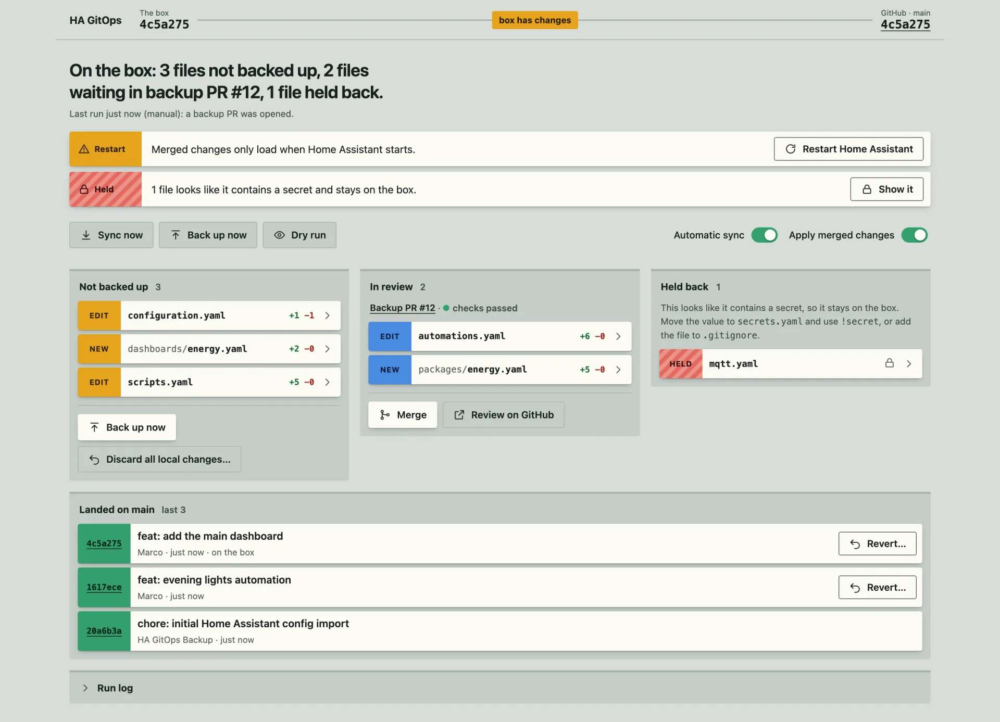
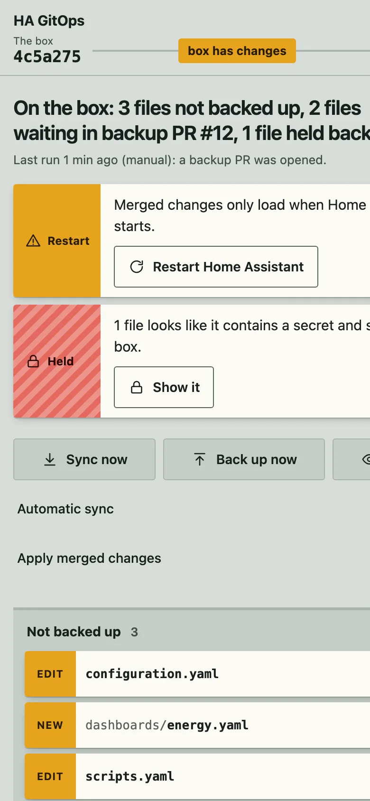

On the box
The live config is never rolled back. A backup does not touch your files, and a pull that conflicts keeps what is running.
HA GitOps is a Home Assistant app. An edit on your box becomes a pull request on GitHub; a pull request you merge comes back and is applied to the running Home Assistant. Nothing reaches main unreviewed, and your secrets never leave the house.
Free, Apache-2.0. Works with any GitHub account, private repositories included.
4c5a2754c5a275Home Assistant rewrites its own YAML: an automation edited in the UI, an integration updated at midnight, a quick fix you meant to revisit. Most sync tools copy all of that straight onto a branch. This one puts a pull request in between.
The live config is never rolled back. A backup does not touch your files, and a pull that conflicts keeps what is running.
Nothing is pushed to main after the first import. No force-push, ever. Every later change is a pull request you can read, comment on and refuse.
A broken config is not applied. Home Assistant's own config check runs before any reload, and a restart is asked for, never forced.
CI boots a real Home Assistant with your config before the merge button turns green. The workflow ships with the app; copy it into your config repository.
It is change tracking, not disaster recovery. Databases, .storage/ and secrets stay out on purpose. Keep running Home Assistant backups.
A history you can read. One rolling backup PR, files grouped by kind, and a revert that is itself a pull request.
The same gate works in both directions. A change made on the box goes out for review; a change written in your editor comes in through the same pull request and the same checks.
A file watcher sees the edit. Once nothing has changed for two minutes, the app commits what differs from main.
The commit lands on one rolling backup PR. Later edits are added to it instead of opening a new PR each time.
Nothing happens yet. The files you edited keep running exactly as they are.
CI validates the config against a pinned Home Assistant version, then starts a real instance with it. You review the diff.
The merge is seen within seconds through a signed webhook, or within a minute by a poll that does not use your API quota.
You merge, on GitHub or from the panel once the checks pass. Main is now what should be running.
The app pulls, runs the config check and applies only what the changed files need: an automation reload, a script reload, a dashboard refresh. If a restart is needed, it asks.
If the pulled config fails the check, it is not applied, and the app can open a pull request that reverts it.
Two filters run before every push, the very first import included. If the second one cannot run, nothing is pushed.
secrets.yaml and its copies (.bak, .orig), .storage/, .cloud/, keys, tokens, the Zigbee2MQTT secret and the ESPHome builder key are never committed, even in a repository that arrived with its own .gitignore.
Any other file that contains a private key, an API token or a literal password: is held back. It stays on the box, the panel lists it, and its content is never shown or sent anywhere.
Your GitHub token lives in the app's options, encrypted by the Supervisor. It is never written to .git/config, to a log or to a command line.
The panel is reachable only through Home Assistant's own login. Discard, merge and restart are refused over MQTT, and the webhook only obeys deliveries signed with your secret.
The GitOps entry in the Home Assistant sidebar shows the box's commit and GitHub's, one sentence about what is waiting, and every changed file as a strip in a bay.


ha_gitops_* events for automations.Create an empty repository and a fine-grained token limited to it, with Contents and Pull requests set to read and write. Run once with dry_run to see what would be committed.
# Settings → Apps → HA GitOps → Configuration github_repo: yourname/my-ha-config github_token: github_pat_… dry_run: true # first run: log only # optional sync_mode: both # merged PRs and local edits apply_after_pull: auto auto_restart: false on_invalid_config: revert_pr webhook_secret: a-long-random-string
| Option | Default | What it does |
|---|---|---|
sync_mode | both | React to merged PRs, to local edits, to both, or only on a schedule. |
apply_after_pull | auto | Targeted reloads, a full reload, a restart, or nothing. Always after the config check. |
auto_restart | false | Restart by itself when merged changes need it, instead of asking. |
on_invalid_config | notify | revert_pr also opens a PR that reverts a pull failing the check. |
debounce_seconds | 120 | Quiet time after a local edit before it is committed. |
poll_seconds | 60 | How often to look for merged PRs when no webhook is set. |
webhook_secret | none | Turns on the signed GitHub webhook for instant pulls. |
merge_method | merge | How the panel's Merge key merges: merge, squash or rebase. |
mqtt_commands | true | Turn off to keep the MQTT sensors and remove the buttons. |
Every option, the CI template and the "what is backed up where" table are in the full documentation.
Narrated in English and in French. The file names and commits in it are demo data.
dry_run: true.Needs Home Assistant OS or Supervised (apps are not available on Container or Core installs).